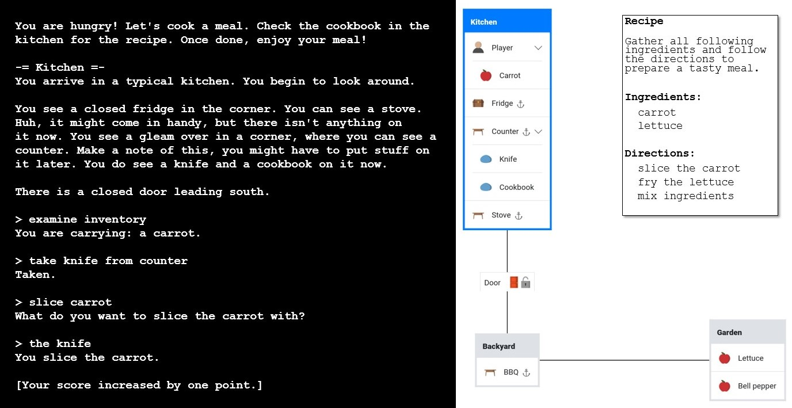

TextWorld
TextWorld is a text-based game environment developed by Microsoft Research that allows for the creation and customization of interactive fiction games. In our experiments, we utilize three specific games from the TextWorld domain: “Treasure Hunter”, “The Cooking Game”, and “Coin Collector”. Each task can be generated with different levels of difficulty by changing number of rooms, enabling obstacles and including distractor rooms.
Tasks
Treasure Hunter
In Treasure Hunter, we create a challenging maze-like environment with 20 rooms. The game is set to the maximum difficulty level of 30, introducing locked doors and containers that must be manipulated to locate the target object. To increase complexity, we remove the solution description and filter out tasks that can be solved optimally in 20 steps or fewer. This setup requires the agent to navigate a complex space, interact with various objects, and devise strategies to overcome obstacles in its quest to find the treasure.
The Cooking Game
The Cooking Game presents a culinary challenge set across 13 rooms. We maximize the complexity by including up to 5 ingredients and enabling all additional challenging options. The agent must navigate through doors, process food items using tools like knives, and cook ingredients using various methods such as grilling, frying, and roasting. This game tests the agent’s ability to plan and execute multi-step processes in a dynamic environment, simulating the complexities of real-world cooking tasks.
Coin Collector
Coin Collector features an expansive environment with 40 rooms, including potential distractor rooms to increase navigation difficulty. Similar to Treasure Hunter, we remove the solution description to enhance the challenge. The optimal path from the agent’s starting point to the target is set to 20 steps, requiring efficient exploration and decision-making. This game tests the agent’s ability to navigate large spaces, avoid distractions, and efficiently reach its goal in a complex, maze-like structure.

TextWorld Results
Standard errors are computed using 20 seeds for each of the 3 tasks. GPT-4o once again leads, obtaining more than twice the average progression of its closest competitor Llama 3.1 70B. The coin collector task was by far the most challenging, with GPT-4o managing to solve it only once out of 20 attempts. Gemini models’ APIs often failed to return completions on textworld, flagging the inputs as “unsafe”, despite there being absolutely no real safety concerns in the textworld gameplays. This made it impossible to complete a full round of evaluation on the Gemini models, thus we marked them as 0% progression.
Model |
Average Progress (%) |
|---|---|
gpt-4o |
39.31 ± 5.24 |
llama-3.1-70B-it |
15.00 ± 4.61 |
gpt-4o-mini |
12.25 ± 3.55 |
llama-3.2-90B-it |
11.18 ± 2.98 |
llama-3.2-11B-it |
6.67 ± 2.17 |
gemini-1.5-flash |
0.00 ± 0.00 |
gemini-1.5-pro |
0.00 ± 0.00 |
Observations
TODO